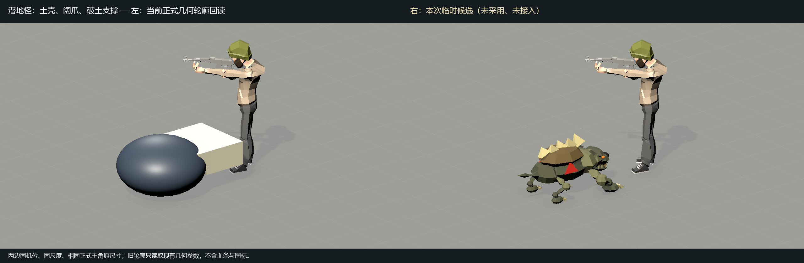
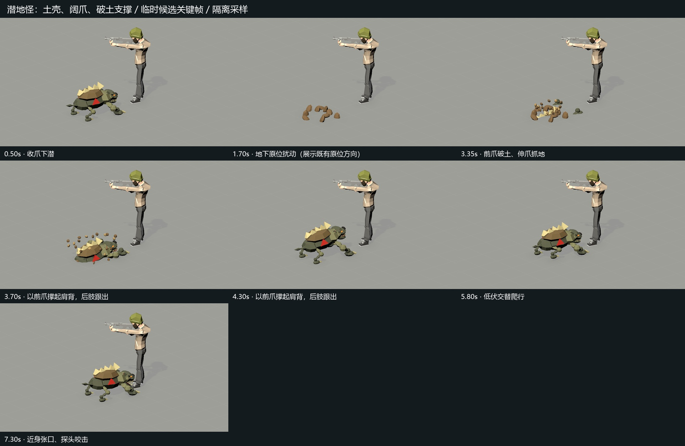
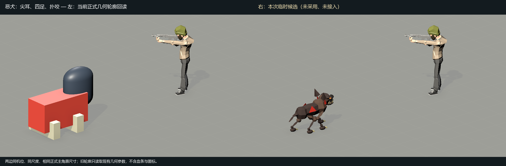
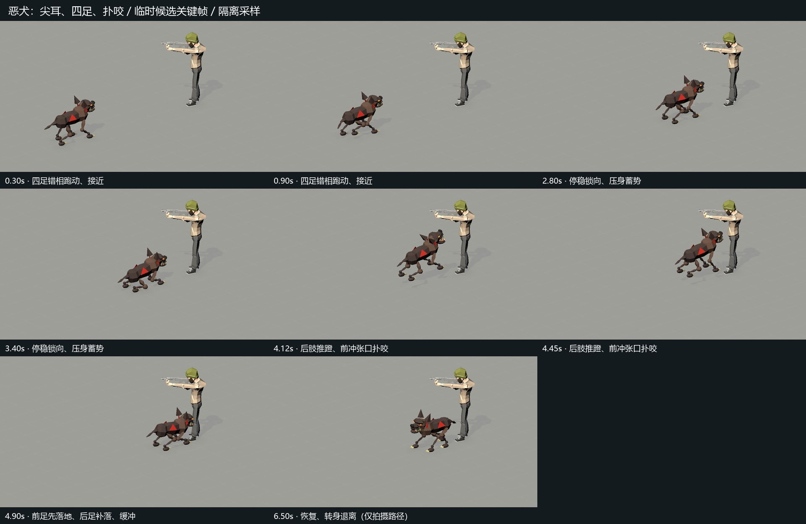

本版本已采用并正式接入：查看正式资源回放。下面保留原临时预览。
潜地怪与恶犬 · 临时候选 v1
本页是隔离场景中的手动动作采样。用户2026-10-25已确认采用这两种怪物的具体视觉，尚未接入正式游戏；成片文字保留拍摄时状态。正式主角保持Prefab原尺寸（实测约1.65米），每格地面网格0.5米。这里只展示现有行为方向，不改地下免伤/原位、锁向冲进、计时、伤害及单双人规则。
潜地怪：阔爪抓地，再把肩背撑出土面
土壳背脊与低伏四足轮廓；完整展示下潜、地下原位扰动、前爪出土、撑身、爬行及近身咬击。地下阶段不发生平面移动。

0.5× 慢放与关键帧

恶犬：错相跑动，停稳后推蹬扑咬
尖耳、长口鼻、独立下颌与三段四肢；先跑近并停稳，锁定朝向后压身扑出，前脚先落地，后脚补落恢复。最后转身退离仅为预览路径，未新增正式技能。

0.5× 慢放与关键帧

两条动作原始采样24fps。具体视觉已确认采用，正式接入尚未实施。没有业务测试、Player Build或资源打包；此处不能证明真实对局或真人双端效果。
完整解码、足部轨迹与正式资源哈希验证 · Unity采样与尺寸记录